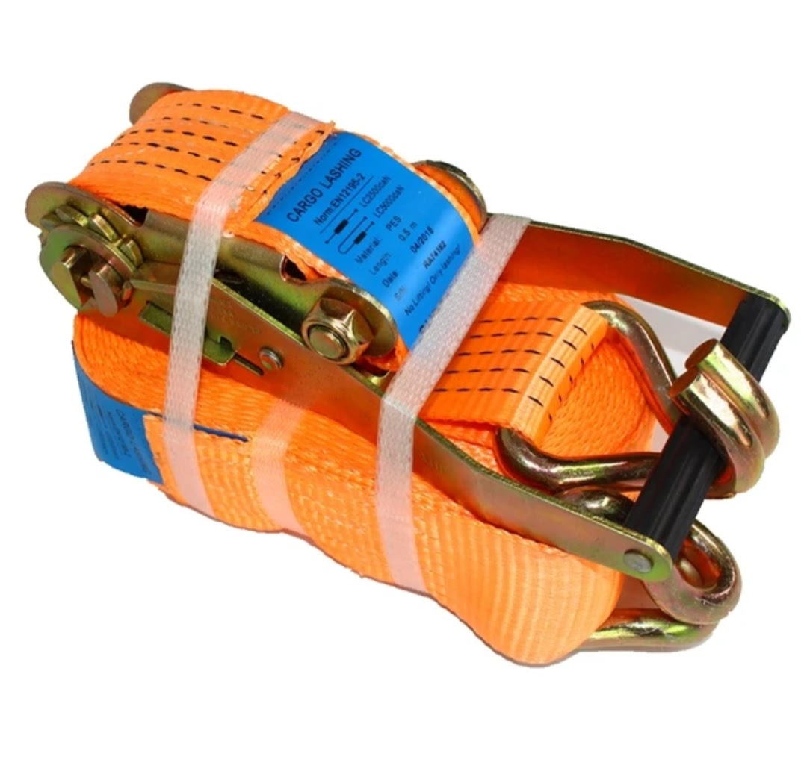
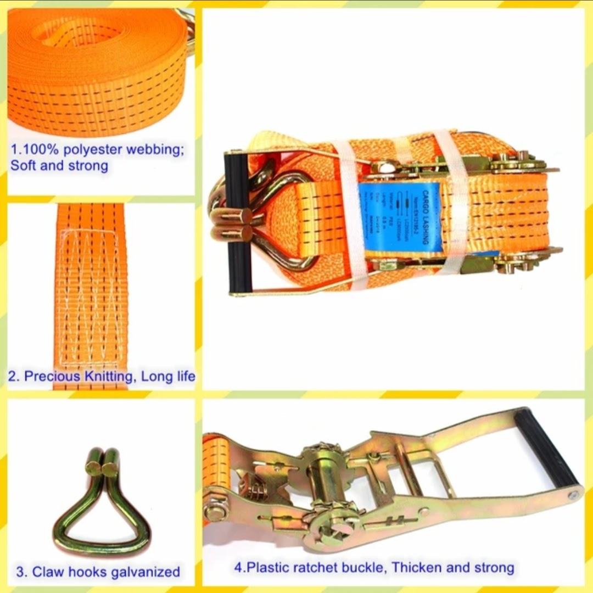
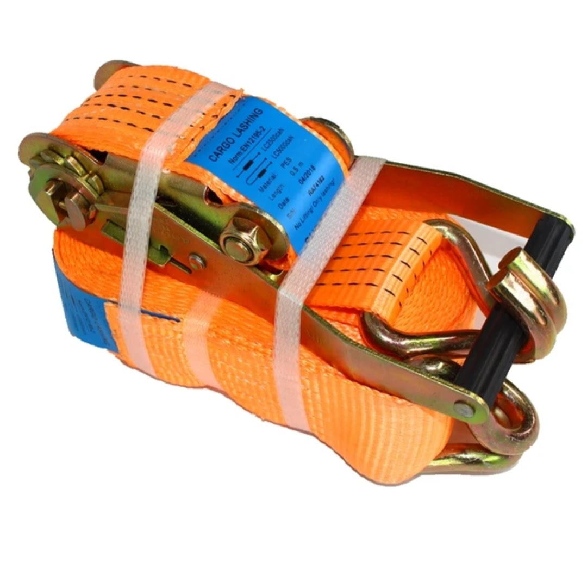
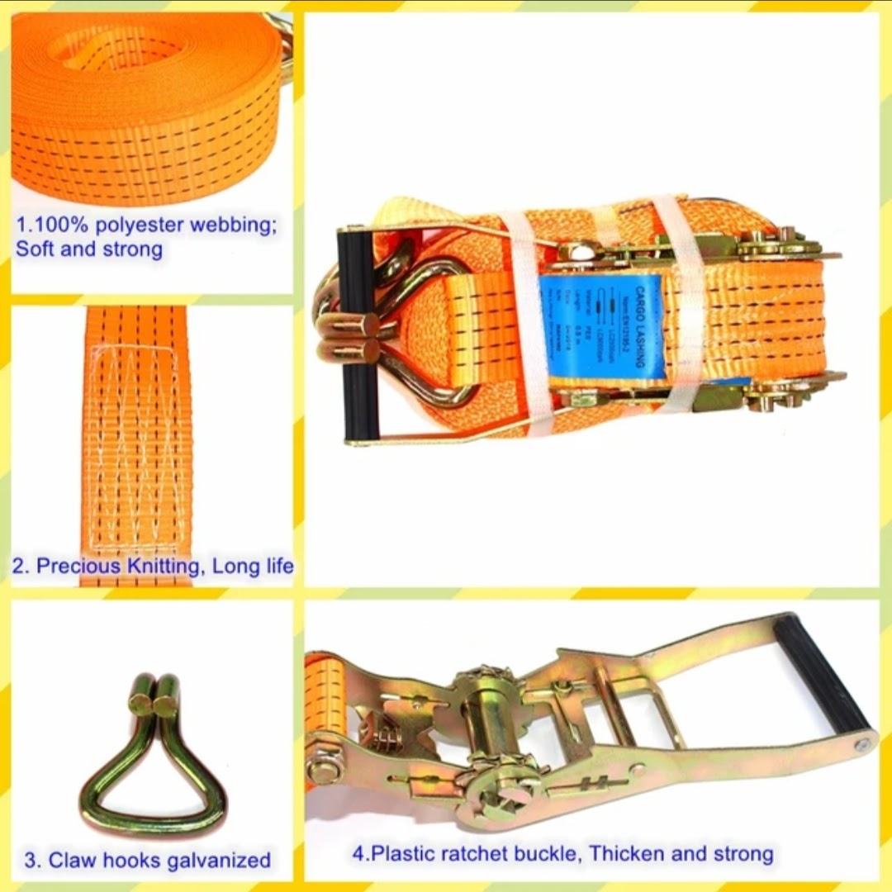
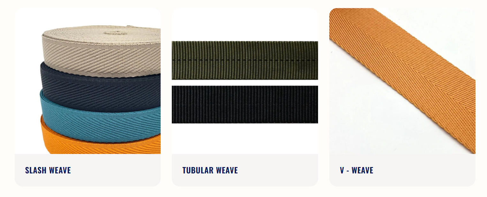
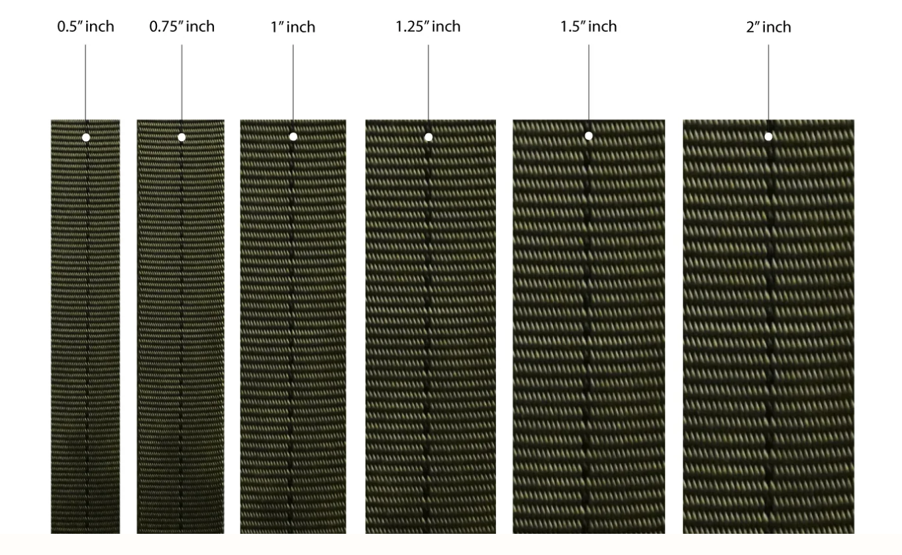
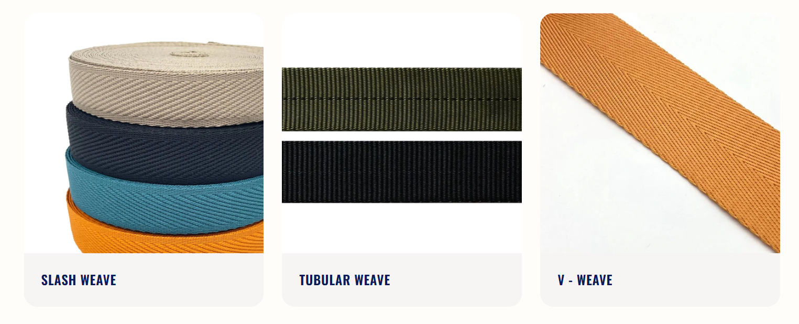
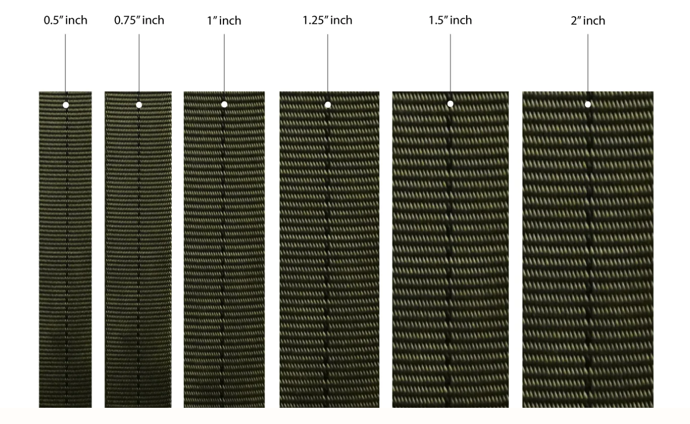

Product Overview
Webbing Belts, also known as Lashing Belts, are load-securing
systems manufactured using high-tenacity polyester webbing
and metal fittings for safe cargo restraint.
These belts are widely used in transport, logistics, and
industrial applications to prevent load movement, shifting,
and damage during transit.
Key Features
- High tensile strength polyester webbing
- Excellent resistance to abrasion and wear
- Strong metal ratchet or cam buckle options
- Reusable and easy to operate
- Improves transport safety and load stability
Specifications
- Material: Polyester webbing
- Buckle Type: Ratchet / Cam buckle
- Width: Multiple widths available
- Length: Standard and custom lengths
- Usage: Cargo lashing and load securing
Applications & Use Cases
- Truck and trailer load securing
- Logistics and cargo transport
- Warehouse pallet restraint
- Industrial equipment fastening
- Export and container lashing
Best Suited For
- Transporters and fleet operators
- Logistics and freight companies
- Manufacturing and industrial units
- Exporters and cargo handlers
Selection Note
For Indian transport conditions, webbing belt width and
breaking strength should be selected based on cargo weight
and vehicle type. Ratchet belts are recommended for heavy
loads and long-distance transport, while cam buckle belts
suit lighter and quick-release applications.
Commonly Used Along With
- Tarpaulin Sheets and Covers
- Corner Protectors and Edge Guards
- Pallets and Cargo Dunnage
Product FAQs
-
What is a webbing or lashing belt used for?
Webbing belts are used to secure cargo during transport
and storage, preventing load movement and damage.
-
What is the difference between ratchet and cam buckle belts?
Ratchet belts provide higher tension and are suitable
for heavy loads, while cam buckle belts are ideal for
lighter loads and quick fastening.
-
Are lashing belts reusable?
Yes. Lashing belts are reusable and designed for repeated
use when properly maintained and inspected.
-
Are these belts suitable for Indian road transport?
Yes. Webbing and lashing belts are widely used across
Indian transport and logistics operations.
-
How do I choose the correct belt strength?
Belt selection should be based on cargo weight, number
of belts used, and safety factors recommended for load
restraint.
-
Are custom lengths and bulk supplies available?
Yes. Webbing belts can be supplied in custom lengths,
strengths, and bulk quantities for commercial buyers.
 



 


